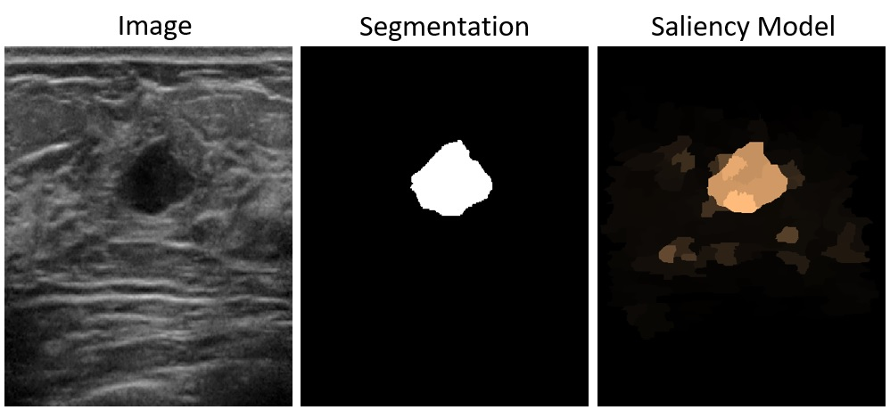
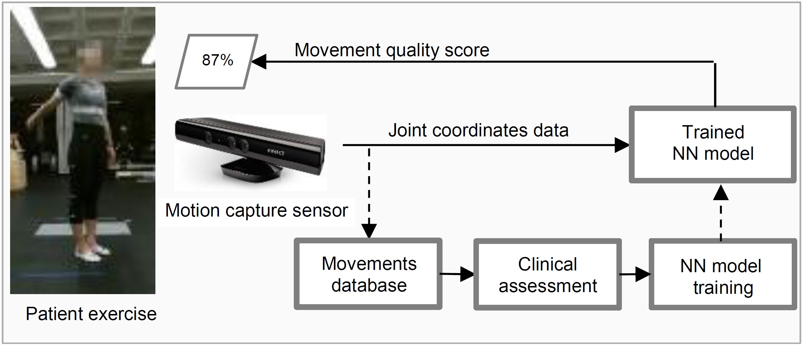
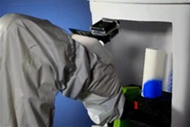
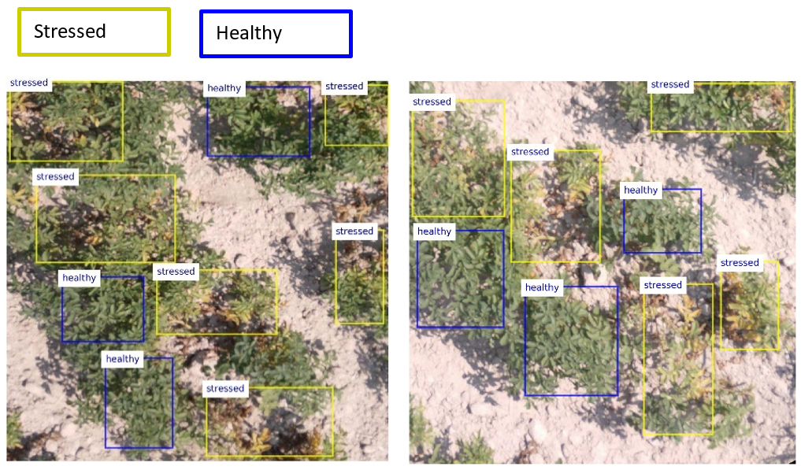

Research Interests
- Machine learning and artificial intelligence
- Biomedical informatics
- Computer vision and image processing
- Robotics / robot learning / visual servoing
Research Projects

Machine Learning-based Analysis of Breast Ultrasound Images
The project leverages machine learning for computer-aided diagnosis of breast ultrasound images, and is a collaborative research effort led by Dr. Min Xian from the Department of Computer Science at the University of Idaho. Our team developed innovative methodology for integrating prior knowledge of visual saliency into deep learning-based tumor segmentation, designing explainable methods for cancer diagnosis using the BI-RADS lexicon, detecting small-size tumors in breast images, and segmenting histopathology images for breast cancer detection.
Machine Learning for Materials Property Prediction
Machine learning offers immense potential for advancing materials science by accelerating the discovery of new materials through predictive modeling and data-driven insights. Our research investigates uncertainty quantification within physics-informed Bayesian Neural Networks, which integrate knowledge from governing laws in material modeling to guide the models toward physically consistent predictions of material properties, with a particular focus on creep rupture life and fatigue life. Additionally, in collaboration with researchers from Idaho National Laboratory, we are developing machine learning methods to correlate mechanical properties between sub-sized specimens and standard-sized specimens.
Human Movement Modeling in Biomedical Applications
The long-term goal of the project is to develop a virtual AI assistant to monitor, supervise, and guide patients performing physical rehabilitation exercises in a home-based setting. Our research employs deep neural networks for modeling and automated evaluation of patient performance during rehabilitation exercises. To support model training and validation, our team created the UI-PRMD dataset (University of Idaho – Physical Rehabilitation Movement Dataset). The modeling approach is based on a hierarchical multilayer architecture designed to handle spatial and temporal variations in captured movement data. The research also seeks to establish criteria and metrics for quantifying patient performance in rehabilitation programs.
Robot Programming by Demonstration
The project aims to commercialize a robotic system capable of learning new skills from visual observation of human-demonstrated skill examples. The research expands on an approach for image-based robot programming by demonstration, which I developed during the Ph.D. studies. To advance this project, I co-founded a start-up company Visual Learning Robotics, which developed a prototype of the system. Task demonstrations are captured with a vision camera, and a learning robot employs a machine learning-based approach to model the movements and generate strategies for task reproduction.
Crop Health Assessment in Precision Agriculture
The project focuses on image processing for crop stress detection in aerial images, an essential component of precision agriculture for site-specific crop management. By enabling early diagnosis of crop health symptoms, this approach can reduce the volume of chemical substances applied at later phases, and contribute to increased crop yield. The specific aims of the project are to collect field images using a multispectral camera mounted on an unmanned aerial system, annotate the collected image data, and design a neural network architecture for discrimination of healthy and stressed plants in the images.
